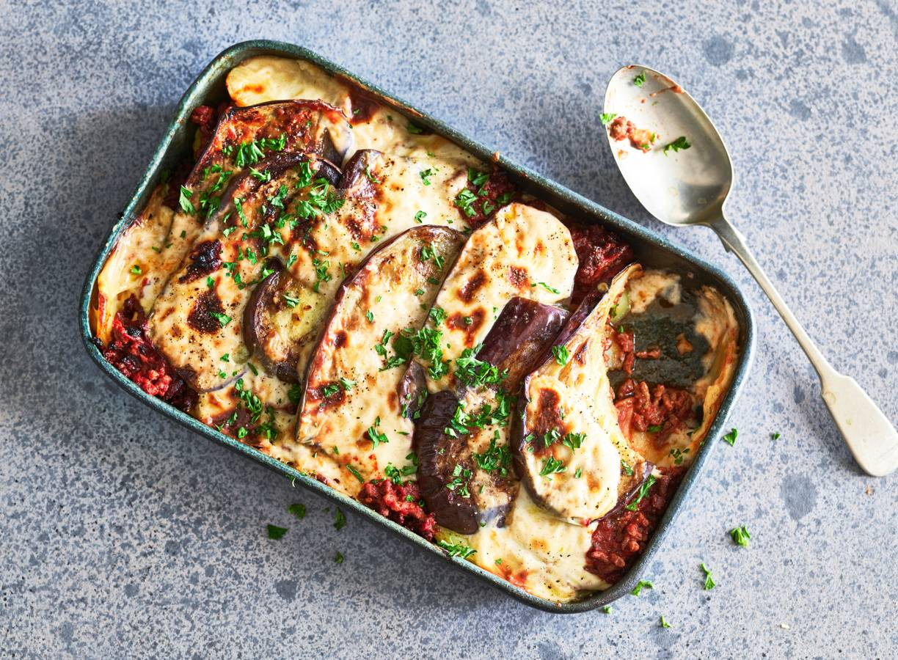

Moussaka

Beschrijving
Designer Moussaka
Njam!
Ingrediënten
- 1kg Aardappelen
- Twee aubergines
- Eén blik tomatenblokjes
- Eén blikje tomatenpuree
- 250g Gehakt
- Olijfolie
- Sneufje nootmuskaat
- Sneufje zout
- Sneufje peper
- Eén lepel boter
- Eén kopje bloem
- Havermelk
Stappen
- Verwarm de oven voor op 180 graden celcius.
- Snij de aardappelen in schijfjes en kook deze 20 minuten in een kookpot.
- Snij de aubergines in schijfjes.
- Doe olijfolie in een pan en bak de aubergine schijfjes.
- Bewaar de schijfjes op een afgedekt bord.
- Bak het gehakt in de pan met olijfolie.
- Voeg het blik tomatenblokjes en het blikje tomatenpuree toe aan de pan.
- Kruid het gehakt en de saus af met zout en peper.
- Hou de tomatensaus met gehakt warm op het vuur en giet de aardappelen af.
- Neem een ovenschaal en maak een bodem met aardappelschijfjes.
- Voeg hierboven een laag met tomatensaus en gehakt toe.
- Herhaal stap 9 en 10 tot de ovenschaal bijna volledig gevuld is of tot de Ingrediënten op zijn.
- Smelt een lepel boter in een klein pannetje om de bechamelsaus te maken.
- Klop de bloemen samen met de gesmolten boter.
- Voeg beetje bij beetje havermelk toe om de saus aan te maken.
- Blijf kloppen met een handmixer tot de juiste consistentie bereikt is.
- Kruid de bechamelsaus af met zout, peper en nootmuskaat.
- Doe de bechamelsaus over de bovenste laag van de ovenschotel.
- Zet de schotel 15 minuten in de oven.